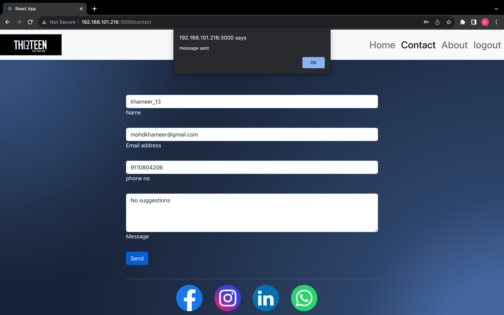
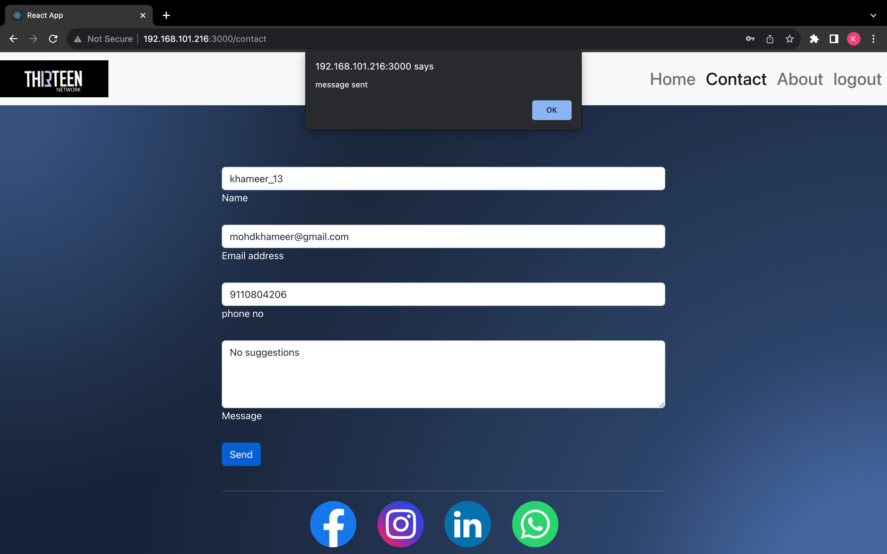
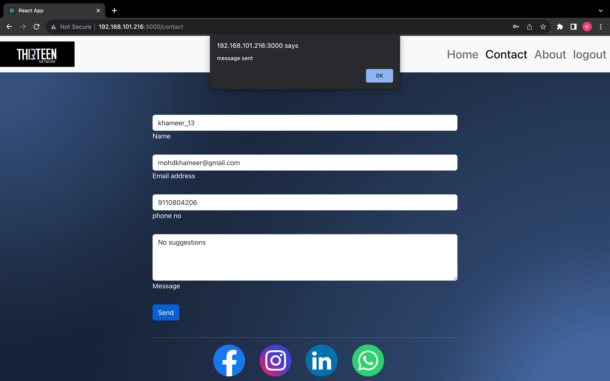

Today Developers around the world are making efforts to enhance user experience of using application as well as to enhance the developer’s workflow of designing applications to deliver projects and roll out change requests under strict time line. Stacks can be used to build web applications in the shortest span of time. The stacks used in web development are basically the response of software engineers to current demands. They have essentially adopted pre-existing frameworks (including Java Script) to make their lives easier. While there are many, MEAN and MERN are just two of the popular stacks that have evolved out of Java Script. Both stacks are made up of open source components and offer an end-to-end framework for building comprehensive web apps that enable browsers to connect with databases.
The common theme between the two is Java Script and this is also the key benefit of using either stack. One can basically avoid any syntax errors or any confusion by just coding in one programming language, Java Script. Another advantage of building web projects with MERN is the fact that one can benefit from its enhanced flexibility. In order to understand MERN stack, we need to understand the four components that make up the MERN stack A database has the following implicit properties:
Mongo DB, Express.js, React and Node. js.
